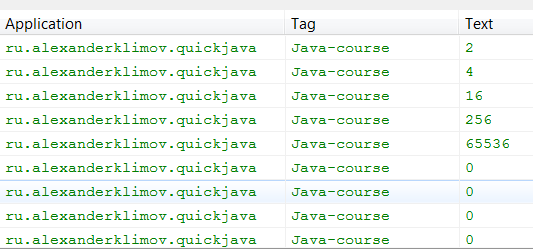

/* Моя кошка замечательно разбирается в программировании. Стоит мне объяснить проблему ей - и все становится ясно. */
John Robbins, Debugging Applications, Microsoft Press, 2000

/* Моя кошка замечательно разбирается в программировании. Стоит мне объяснить проблему ей - и все становится ясно. */
John Robbins, Debugging Applications, Microsoft Press, 2000
Целочисленные типы
Типы с плавающей точкой
Символы (тип char)
Булевы значения
Приведение типов
Вселенная Java состоит из трёх субстанций: объекты, примитивы и коты. Про последних в документации ничего не говорится, поэтому их рассматривать не будем, но они существуют!
Примитивные типы Java не являются объектами. К ним относятся:
| Тип | Разрядность | MIN | MAX |
|---|---|---|---|
| byte | 8 бит | -128 | 127 |
| short | 16 бит | -32768 | 32767 |
| int | 32 бит | -2147483648 | 2147483647 |
| long | 64 бит | -9233372036854775808 | 9233372036854775807 |
| float | 32 бит | -3.4E+38 | 3.4E+38 |
| double | 64 бит | -1.7E+308 | 1.7E+308 |
Java определяет четыре целочисленных типа: byte, short, int, long. Они могут быть положительными и отрицательными (Java не поддерживает только положительные значения без знака, как некоторые языки программирования).
Наименьший по размеру целочисленный тип - byte. Это 8-битовый тип с диапазоном допустимых значений от -128 до 127. Переменные типа byte часто используются при работе с потоком данных из сети или файла, а также при работе с необработанными двоичными данными или в массивах для экономии памяти.
Объявить переменную типа byte можно следующим образом:
byte c, a, t; // объявили сразу три переменные
Класс Byte является оболочкой для данного типа. Без необходимости не используйте в Android класс Byte.
Тип short - 16-битовый тип в диапазоне от -32768 до 32767. Используется очень редко.
short m;
Класс Short является оболочкой для данного типа. Без необходимости не используйте в Android класс Short.
Целые числа, представленные типом int, являются самым распространенным типом в программе, с которым вы будете работать. Поэтому нужно хорошенько изучить его и узнать его достоинства и ограничения. Это 32-битовый тип, имеющий диапазон допустимых значений от -2147483648 до 2147483647 (около двух миллиардов). Этого числа вполне достаточно, чтобы посчитать всех котов на свете. Часто используется в циклах, индексировании массивов, хотя может показаться, что для небольших операций в цикле и массивах проще использовать short или byte. Нужно запомнить, что тип intэффективен в этих случаях из-за особенностей структуры вычислительных процессоров. Просто примите на веру.
Зададим себе вопрос, насколько большим может быть целое число типа int?
Напишем простую программу, где будем умножать переменную саму на себя. Для начала присвоим ей значение 2, а дальше строчка за строчкой будем выводить результат. Результаты будем отдавать коту учёному LogCat. Весь код поместим в обработчик события щелчка на кнопке нашей учебной программы, а первую строчку поместим выше её.
final String TAG = "Java-course";
butGetResult.setOnClickListener(new OnClickListener() {
@Override
public void onClick(View v) {
int x = 3;
Log.i(TAG, Integer.toString(x));
x *= x;
Log.i(TAG, Integer.toString(x));
x *= x;
Log.i(TAG, Integer.toString(x));
x *= x;
Log.i(TAG, Integer.toString(x));
x *= x;
Log.i(TAG, Integer.toString(x));
x *= x;
Log.i(TAG, Integer.toString(x));
x *= x;
Log.i(TAG, Integer.toString(x));
x *= x;
Log.i(TAG, Integer.toString(x));
x *= x;
Log.i(TAG, Integer.toString(x));
}
});
Запустите программу и нажмите на кнопку. Видимых изменений в программе вы не увидите. Переключитесь на Eclipse и откройте окно LogCat. Настройте его фильтр, чтобы отображались только наши сообщения. В результате мы получим такую картину:
2 4 16 256 65536 0 0 0 0

Что за бред, скажете вы. Когда мы умножаем 65536 на себя, то получаем 0 (Только не говорите об этом учительнице по математике). А потом, естественно, программа умножает 0 на 0 и продолжает выводить результаты.
Вы еще больше удивитесь, если в качестве начального значения возьмете число 3. На этот раз вы сможете получить даже отрицательные значения.
3 9 81 6561 43046721 -501334399 2038349057 -1970898431 120648705
Проверьте самостоятельно. Если вы и это попытаетесь доказать учительнице, то исключение из учебного заведения вам гарантировано.
Класс Integer является оболочкой для данного типа. Без необходимости не используйте в Android класс Integer. Для сравнения: тип int занимает 4 кб памяти, а Integer - 16 кб.
В Java 7 можно использовать знак подчёркивания для удобства. Например, так:
int myInt = 1_000_000; // миллион
Компилятор не обращает внимания на эти знаки, а человеку проще понять, что ему предлагают миллион или миллиард. В Android относительно недавно появилась полноценная поддержка Java 7 и вам в настройках нужно указать новую версию компилятора.
Этот приём относится не только к int, но и к другим типам чисел.
String mString = "42"; // строка
int mInt = Integer.parseInt(mString);
Если у вас тип CharSequence, то его можно сконвертировать сначала в строку при помощи метода toString(), а потом в int.
Тип long - это 64-битный тип со знаком, используемый в тех случаях, когда используется очень большое значение, которое не способен хранить тип int. Например, чтобы вычислить расстояние, которое прошёл солнечный луч от солнца до зеркала, превратившись в солнечного зайчика, за которым безуспешно охотится котёнок, вам понадобится именно этот тип.
Можно использовать символы l или L для обозначения числа типа long. Рекомендую использовать заглавную букву, чтобы избежать возможной путаницы. Например, напишем пример:
// сколько ночей в арабских сказках?
long night = 101l;
System.out.println(night);
Запустив пример, вы увидите ответ 101. Почему так получилось? А потому что последний символ - это не единица, а символ l. Присмотритесь внимательнее. Если бы мы написали long night = 101L, то не ломали бы голову себе.
Класс Long является оболочкой для данного типа. Без необходимости не используйте в Android класс Long.
Числа с плавающей точкой (иногда их называют действительными числами) применяются при вычислении выражений, в которых требуется точность до десятичного знака. Например, это может быть вычисление квадратного корня, значений синуса, косинуса и т.п. Существует два типа с плавающей точкой: float и double, которые представляют числа одинарной и двойной точности.
Тип float определяет значение одинарной точности, которое занимает 32 бит. Переменные данного типа удобны, когда требуется дробная часть без особой точности, например, для денежных сумм.
float tugrik;
Класс Float является оболочкой для данного типа. Без необходимости не используйте в Android класс Float.
Тип double обеспечивает двойную точность, что видно из его названия (double - двойная). Занимает 64 бит для хранения значений. Многие математические функции возвращают значения типа double. Кстати, современные процессоры оптимизированы под вычисления значений двойной точности, поэтому они предпочтительнее, чем тип float.
double pi, r, a;
pi = 3.1416; // приблизительное значение числа π
r = 5.5; // радиус окружности
a = pi * r * r; // вычисляем площадь окружности
Класс Double является оболочкой для данного типа. Без необходимости не используйте в Android класс Double.
Для хранения символов Java использует специальный тип char. Он отличается от типа char в языках C/C++, где представляет собой целочисленный тип с размером 8 бит. В Java для char используется кодировка Unicode и для хранения Unicode-символов используется 16 бит. Диапазон допустимых значений - от 0 до 65536 (отрицательных значений не существует).
char ch1, ch2, ch3;
ch1 = 67; // код переменной
ch2 = 'a'; // сам символ
ch3 = 116; // код переменной
textViewInfo.setText("Слово из трёх букв: " + ch1 + ch2 + ch3);
Из примера выше видно, что переменной можно присвоить код символа или непосредственно сам символ, который следует окружить одинарными кавычками. Попробуйте запустить пример и посмотреть, какое слово получится из трёх указанных символов.
Не следует путать символ 'a' со строкой "a", состоящей из одного символа. На экране монитора они выглядяет одинаково, но в программах ведут себя по разному.
Хотя тип char используется для хранения Unicode-символов, его можно использовать как целочисленный тип, используя сложение или вычитание.
char ch1;
ch1 = 'x';
textViewInfo.append("ch1 содержит " + ch1);
ch1++; // увеличим на единицу
textViewInfo.append("ch1 содержит " + ch1);
В результате получим:
ch1 содержит x
ch1 содержит y
Если вы думаете, что увеличив значение переменной ch1 ещё на одну единицу, вы получите символ "й", то глубоко заблуждаетесь.
Чтобы узнать, какой символ содержится в значении переменной, заданной как int, можно воспользоваться двумя специальными методами из класса EncodingUtils:
Для стандартных символов ASCII:
int i = 67;
byte[] data = { (byte) i };
CharSequence strSymbol = EncodingUtils.getAsciiString(data);
textViewInfo.setText(strSymbol);
Для расширенной таблицы символов:
int i = 379;
byte[] data = { (byte) i };
CharSequence strSymbol = EncodingUtils.getString(data, "windows-1251");
textViewInfo.setText(strSymbol);
Методы работают со строками, но если мы используем строку из одного символа, то получим то, что нам нужно.
Класс Character является оболочкой вокруг типа char. Чтобы получить значение типа char, содержащее в объекте класса Character, вызовите метод charValue().
Тип boolean предназначен для хранения логических значений и может принимать только одно из двух возможных значений: true или false. Данный тип всегда возвращается при использовании операторов сравнения (больше, меньше, равно, больше или равно, меньше или равно, не равно). Также он используется в управляющих операторах if и for.
boolean check;
check = true;
В отличие от реальной жизни, где вполне может состояться диалог:
- Кать, чай будешь? - Да нет наверное
В компьютерной программе нужно чётко определиться - истина или ложь.
В операторах if используется укороченная запись при значении true:
if (check == true) ... // необязательный вариант
if (check) ... // укороченная запись
Java сам поймёт, что переменную check нужно сравнить с true.
Класс Boolean является оболочкой вокруг значений типа boolean. Чтобы получить значение типа boolean из объекта класса Boolean, используйте метод booleanValue(). Тип boolean использует 4 кб памяти, а Boolean - 16 кб. Вывод понятен?
Ещё один совет, применимый ко всем типам. Допустим, нам нужно объявить 32 переменных типа boolean:
boolean mProperty1;
boolean mProperty2;
...
boolean mProperty32;
Умножаем 4 байта на 32 переменных и получаем 128 кб занятой памяти. А если объявим массив:
boolean[] mProperty = new boolean[32]
Считаем: 4 + 8 + 8 + 32 * 1 = 52. С учётом выравнивания памяти по 8 кб, получаем не 52, а 56. Всё равно меньше, чем в первом примере.
Когда мы производим какие-то действия с переменными, то нужно следить за типами. Нельзя умножать котов на футбольные мячи, это противоречит здравому смыслу. Также и с переменными. Если вы присваиваете переменной одного типа значение другого типа, то вспоминайте теорию. Например, вы без проблем можете присвоить значение типа int переменной типа long, так как все числа из диапазона типа int гарантировано помещаются в диапазон чисел long. В этом случае Java выполнит преобразование автоматически, вы даже ничего не заметите.
Представим обратную картину - мы хотим присвоить переменной типа byte значение типа double. Java не сможет автоматически выполнить ваше желание. Не все числа типа double могут стать числом типа byte. Но часть чисел может, например, число 9. В таком случае используется так называемое приведение типов, чтобы подсказать Java о допустимости операции.
Итак, автоматическое преобразование типов осуществляется, если оба типа совместимы и длина целевого типа больше длины исходного типа. В этом случае происходит преобразование с расширением. Вы всегда можете преобразовать любое число типа byte в число типа int. Такая операция произойдёт без вашего участия автоматически.
Таблица выглядит следующим образом.

Сплошные линии обозначают преобразования, выполняемые без потери данных. Штриховые линии говорят о том, что при преобразовании может произойти потеря точности.
Типы целых чисел и чисел с плавающей точкой совместимы частично. Например, число 5 вполне может быть числом с плавающей точкой (5.0).
Совсем не совместимы, например, char и boolean.
С автоматическим приведением мы разобрались. Рассмотрим вариант, когда нужно преобразовать число типа int в число типа byte. Преобразование автоматически невозможно, поскольку byte меньше int. Но, например, число 99 вполне можно использовать и как int и как byte. В этом случае используется явное приведение типов, то есть преобразование из одного типа в другой (преобразование с сужением).
Выглядит это следующим образом:
int a;
byte b;
// какие-то операции с переменной
b = (byte) a;
Как видите, вы в скобках указываете тип, к которому нужно явно привести переменную.
Существует ещё вариант приведения с усечением. Это когда число с плавающей точкой приводится к целочисленному типу. В этом случае отбрасывается дробная часть (хвост). Например, число 3.14 будет усечено до числа 3:
double a = 3.14;
byte b = (byte) a;
Если размер целочисленной части слишком велик для целочисленного типа, то значение будет уменьшено до результата деления по модулю на диапазон целевого типа.
Например, попробуйте преобразовать число 454.874 в тип byte:
byte b;
double d = 454.874;
b = (byte) d;
textViewInfo.append("b равно " + b);
У меня вывелся удивительный результат: b равно -58.
Рассмотрим такой пример. Допустим у нас есть выражение, где промежуточное значение может выходить за пределы допустимого диапазона:
byte a = 44;
byte b = 55;
byte c = 101;
int d = a * b - c;
При умножении переменных a * b промежуточный результат вышел за пределы диапазона допустимых значений для типов byte. Java во время вычисления промежуточных результатов автоматически повышает тип каждого операнда до int и ошибки не происходит.
Это удобно, но может поставить в тупик в следующем примере:
byte b = 50;
b = b * 2;
С виду всё правильно. Если не слишком больше число типа byte, а итоговый результат тоже не выходит за диапазон допустимых значений. Но Java не позволит вам написать подобный код. Происходит следующее. Во время вычисления выражения тип операндов был автоматически повышен до int, как об этом говорилось выше. При этом тип результата тоже был повышен до int. Получается, что результат вычисления равен типу int, а мы пытаемся его присвоить переменной b, которая у нас объявлена как byte. И это несмотря на то, что итоговый результат может быть типом byte. Как же выйти из этого положения? Следует использовать явное приведение типов:
byte b = 50;
b = (byte) (b * 2);
Мы рассмотрели единичные примеры. Пора обобщить и запомнить несколько правил.
Типы всех значений byte, short, char повышаются до типа int, как это было рассмотрено выше.
Если один операнд имеет тип long, то тип всего выражения повышается до long.
Если один операнд имеет тип float, то тип всего выражения повышается до float.
Если один операнд имеет тип double, то тип всего выражения повышается до double.
Рассмотрим выражение:
byte b = 45;
char c = 'c';
short s = 1005;
int i = 700000;
float f = 4.55f;
double d = 1.456;
double result = (f * b) + (i / c) - (d * s);
textViewInfo.append("d равно " + d);
В первом промежуточном выражении (f * b) тип переменной b повышается до float и промежуточный результат также становится float. В следующем выражении (i / c) тип у переменной c повышается до int и промежуточный результат также становится типом int. В выражении (d * s) тип переменной s повышается до double и промежуточное выражение также становится double. В результате у нас появились три промежуточные значения типов: float, int, double. При сложении float и int мы получаем float, затем при вычитании с использованием float и double тип повышается до double, который и становится окончательным типом результата выражения.